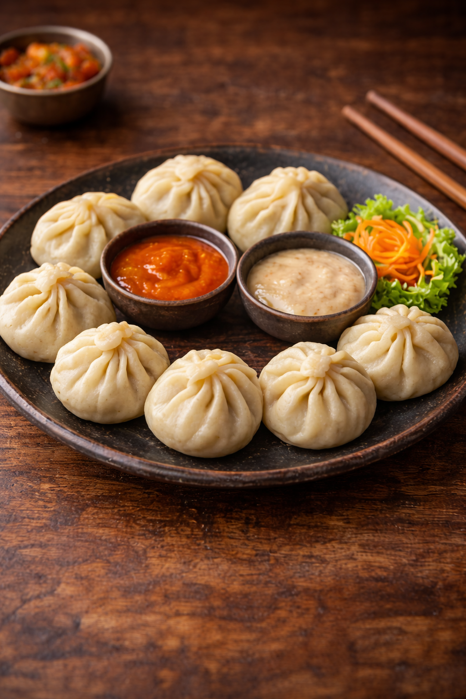

MOMO

Momo is a popular Nepali dumpling made from dough filled with minced meat or vegetables. It is usually steamed and served with spicy tomato or chili sauce. Momos are a favorite snack and street food across Nepal.
Ingredients
- All-purpose flour
- Minced chicken or vegetables
- Onion
- Garlic
- Ginger
- Soy sauce
- Salt
- Black pepper
- Oil
Steps
- Mix flour and water to make a soft dough.
- Prepare filling with minced meat or vegetables, onion, garlic, and spices.
- Roll the dough into small circles.
- Place filling inside and fold the dumplings.
- Steam the momos for about 10 - 12 minutes.
- Serve hot with spicy dipping sauce.
Home